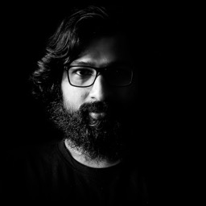

Dipak Chandran Parambil
14+ years building customer-facing web applications & data-rich interfaces, currently on AWS CloudWatch, one of AWS's largest observability services.
Key skills
Frontend
Build & Test
Backend, Cloud & AI
Ways of working
Experience
- Frontend EngineerJun 2022 – PresentAmazon Web Services (AWS) · CloudWatch · Dublin
- Built the front end for an AI-assisted operational investigations console correlating metrics, logs and alarms.
- Built Metric Streams partner integrations and led multiple new AWS regional launches.
- Self-service metric-onboarding tool, built full-stack end-to-end (React, Node.js/Express, Lambda), replacing a manual config process.
- Authored two reusable E2E frameworks adopted across teams: an LLM-agent framework (Python, Bedrock, Fargate) and a deterministic Playwright visual-regression suite that resolved chronic flakiness.
- AI/LLM feedback-triage platform: serverless pipeline (ingest → classify → cluster → attribute → summarize) plus dashboard front end.
- Designing and leading the build of a save/reuse query API service, owning the API contract, implementation and client.
- Self-initiated visual drag-and-drop UI builder that exports production-ready React components and unit tests.
React, TypeScript, SCSS, CloudScape, Redux-Saga, Zustand, Vite, Webpack, Playwright, Node.js - Staff Software Application EngineerOct 2021 – Jun 2022Extreme Networks · Bangalore
- Built network-monitoring UI for ExtremeCloud IQ: device health, alarms and real-time performance.
- Contributed reusable elements to the shared design system used across the suite.
- Delivered data-rich monitoring views for large-scale enterprise deployments with backend and UX teams.
React, TypeScript, Redux, SCSS - Technical LeadMay 2020 – Sep 2021Sourcebits Digital · Bangalore · CloudTV for ActiveVideo
- Led frontend architecture and technical direction for the CloudTV management UI.
- Owned code reviews, release quality, and mentoring of frontend engineers.
React, TypeScript, Redux, Node.js, SCSS, Webpack - Frontend LeadMar 2018 – Mar 2020Milaap · Bangalore
- Led migration from a legacy stack to React for South Asia's largest crowdfunding platform.
- Managed and mentored a team of 4 frontend engineers.
- Shipped core features across fundraiser creation, donation flows, campaign pages and donor experiences.
- Established frontend best practices for reusability and build tooling.
React, Redux, Webpack, Babel, SCSS, Node.js
Notable projects
AI-assisted operational investigations in CloudWatch with guided onboarding, built with Product, UX and Applied Science.
Partner-integration front end for near-real-time metric streaming to third-party monitoring partners.
LLM pipeline that categorizes, clusters and routes product feedback to owning teams, plus dashboard.
LLM-agent natural-language UI testing and byte-stable Playwright visual regression, adopted across teams.
Drag-and-drop canvas exporting production-ready React components and unit tests.
Crowdfunding platform for personal and healthcare causes serving millions; legacy-to-React migration.